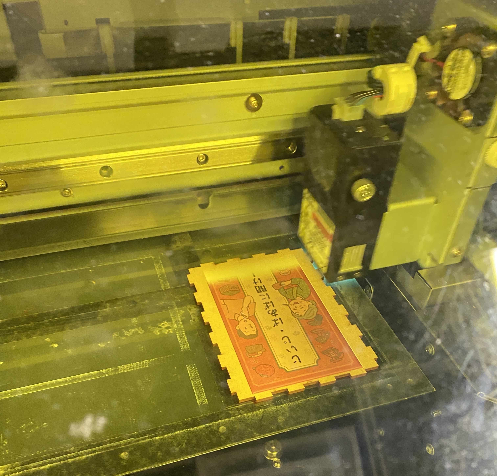
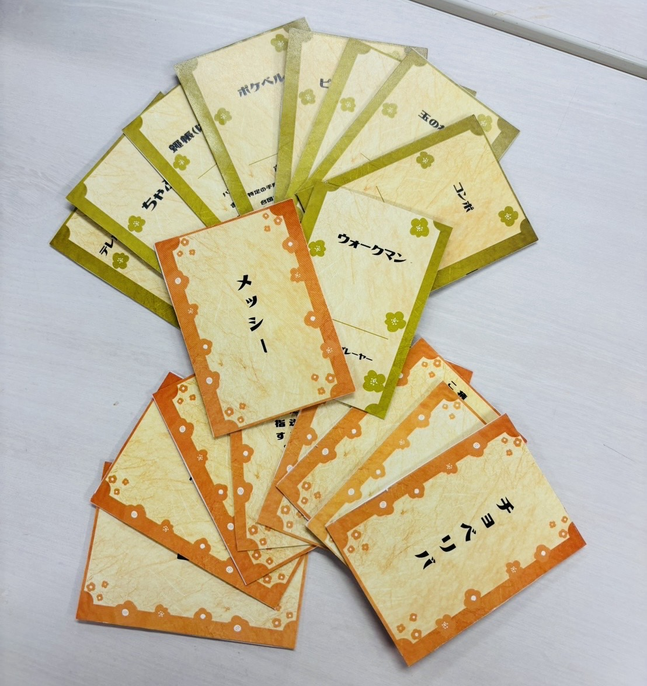
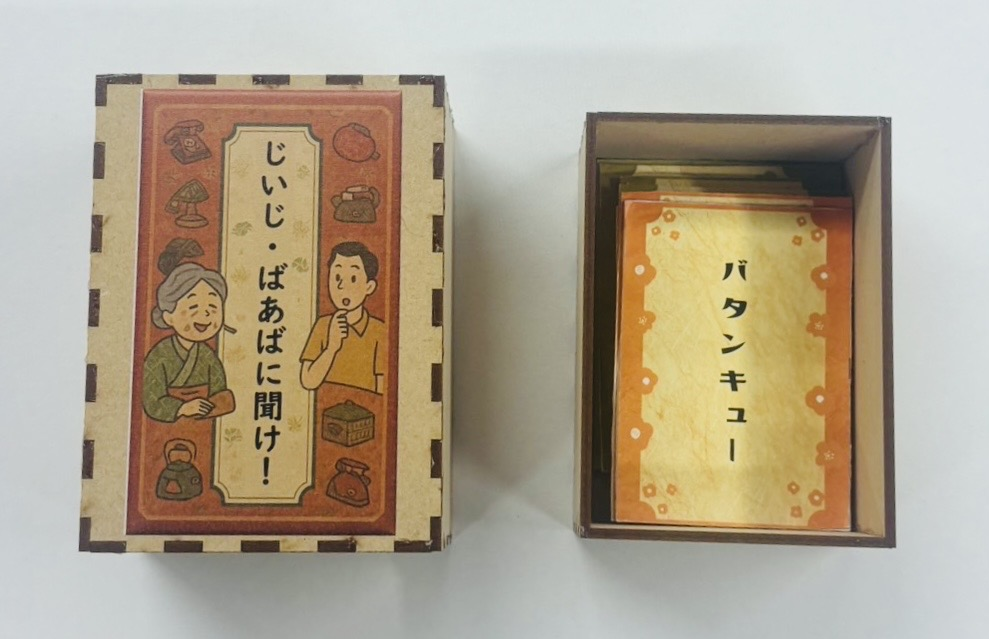

２０２５年１０月４日
【やったこと】
- 後期のプロジェクト確認
- 世代間交流班プロダクト制作完成
後期のプロジェクト確認
ナッジと環境省のプロジェクト、どちらか一つを選択。
環境省のプロジェクトに参加することにした。
【神奈川大学 お知らせ 2025.09.22】
環境省採択プロジェクト「Community Loops」に本学が協力します
【環境省のプロジェクトの今後のスケジュール】
１０月 ３日 キックオフ 問題共有
１０月１０日 テーマ決め
１１月２１日 中間発表
１２月下旬か１月上旬に最終発表
世代間交流班プロダクト制作完成
ななみが夏休み中にデザイン制作、印刷までやってきてくれた。
なので、デザインを印刷した紙を厚紙(台紙)に貼った。
カードケースをMDFで作成。(レーザーカッター・UVプリンタ使用)
レーザーカッターでMDFを切る際に使用したサイトは「
MakerCase
Basic Boxを使用。
ここで、サイズはあっていたが、接着剤を使用しないと外れることが判明し、接着剤で箱を形成。
※MDFのデータは、はめ込む側を1.0cm、はめ込まれる側を0.97㎝と0.3mm変えると綺麗にはまりやすいとファブラボのスタッフの方にアドバイスをもらった。
カードケースのデザインは、AIで生成したものにカードゲームのタイトルを当てはめた。
UVプリンタのデータは、外枠、裏白、デザインの３つのデータが必要。
※イラストレーターで使えるショートカットキーについて教えてもらった。
コントロールA⇒全選択
シフト押しながら削除したい部分を選択
コントロールG⇒グループ化
整列で、縦横両方真ん中にした。



ゼミ時間外活動
２０２５年９月２４日
鎌倉市ゴミ問題班
動画撮影、音声録音。
【担当】
キャスト：いつき・あやな
カメラマン：ももか
動画編集:きいち